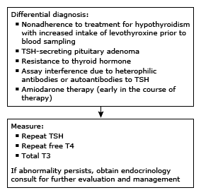

T3: triiodothyronine; T4: thyroxine; TSH: thyroid-stimulating hormone.
* The normal range for TSH in nonpregnant adults is typically 0.5 to 4.5 mU/L, and for serum free T4, approximately 0.8 to 1.8 ng/dL (10.3 to 23.2 pmol/L). The normal range for free T4 is shifted slightly to higher values in patients taking levothyroxine. Interpretation of a specific abnormal test result should be based upon the reference range reported with that result. During pregnancy, TSH should be interpreted using population-based and trimester-specific reference ranges for TSH and assay method and trimester-specific reference ranges for serum free T4. When population-based, trimester-specific reference ranges are not available for TSH, 4.0 mU/L should be considered the upper limit of normal in pregnant women.